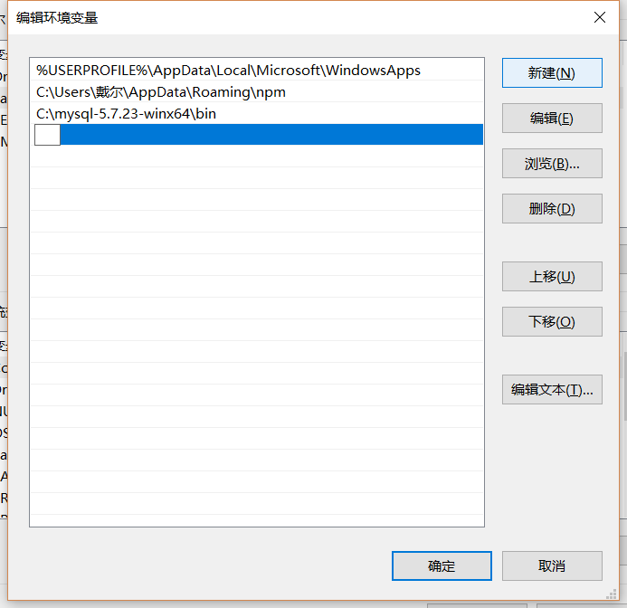
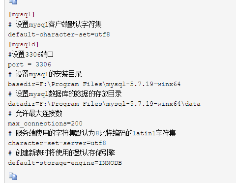

MySQL
第一步-下载
下载地址
第二步-安装
1.msi格式的，这种格式直接点击安装
2.zip格式的，zip格式是自己解压，解压缩之后其实MySQL就可以使用了，但是要进行配置。
第三步-配置
1.配置环境变量：我的电脑->属性->高级->环境变量，选择PATH,添加你的mysql bin文件夹的路径

2.自己建立一个my.ini文件

3.以管理员身份运行cmd,输入：cd bin文件夹的路径,输入mysqld -install进行安装，执行命令后提示：Service successfully installed. 表示安装成功
4.执行mysqld --initialize-insecure --user=mysql进行MySQL的初始化
5.执行net start mysql以启动mysql服务
执行后会有如下提示：
MySQL服务正在启动.
MySQL服务已经启动成功
6.设置新密码
mysqladmin -u root -p password 新密码
Enter password: 旧密码(回车）